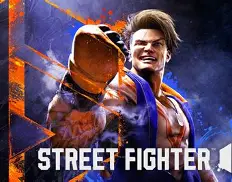
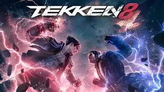
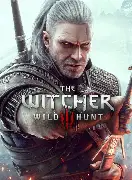
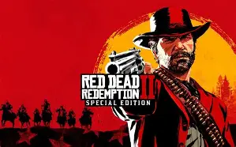
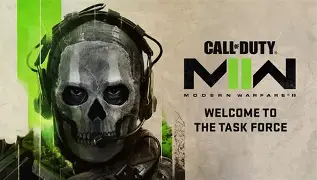
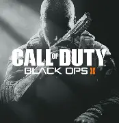

Street Fighter 6 : Top jeux de combat du moment, les jeux street fighter ont toujours dominer le top des jeux de combats grace a leur graphiques et leurs divers combats et actions en jeux très bien réalisés.
Actualités des classement de jeux mis a jours chaque année en fonction des vote de la communauté gaming

Street Fighter 6 : Top jeux de combat du moment, les jeux street fighter ont toujours dominer le top des jeux de combats grace a leur graphiques et leurs divers combats et actions en jeux très bien réalisés.

Tekken 8 : Il prend la deuxième place malgrées d'excellentes performances également , le coté un peut plus fantastique du jeu lui aura surement couter la deuxième place

Red Dead Redemption 2 et The Witcher 3 : les deux jeux top 1 des RPG , la realisation et la mise en scène de ces deux jeux est tellement epoustouflante que lors des votes ces deux jeux ont obtenu le meme nombre de vote,les communautés n'ont pas su choisir alors ils ont décider de les mettre en première place les deux.


Modern Warfare 2 : le call of duty des anciens celui qui a été le plus jouées et apprécies encore maintenant

Black Ops 2 : Quasiment aussi impactant que MW2 , il a choque toute une génération et domine encore le top du classement surtout grace a son mode zombie